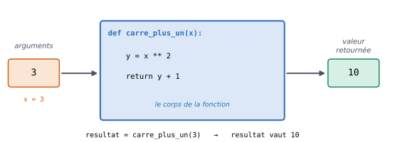
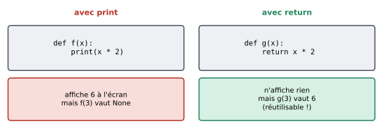

4. Les fonctions et les modules#
Objectifs du chapitre
À la fin de ce chapitre, vous saurez :
définir vos propres fonctions avec
defet les appeler ;faire la différence entre afficher un résultat (
print) et retourner un résultat (return) ;utiliser des arguments nommés et des arguments ayant une valeur par défaut ;
comprendre la notion de variable locale ;
importer et utiliser des modules (comme
mathourandom).
Prérequis : chapitres 1 à 3. Durée indicative : 2h.
4.1. Des fonctions, vous en utilisez déjà#
Nous avons déjà utilisé plusieurs fonctions sans le dire : print, type, int, range…
Lorsque l’on écrit :
x = 3.7
print(x)
3.7
on appelle la fonction print en lui donnant un argument (ici la variable x).
La fonction print ne fait qu’afficher une information.
D’autres fonctions, comme type ou int, retournent (on dit aussi renvoient) une valeur que l’on peut réutiliser dans la suite du programme, par exemple en la stockant dans une variable :
t1 = type(1) # on stocke dans t1 la valeur retournée par type
t2 = type(2.)
if t1 == t2:
print("types identiques")
else:
print("types différents")
types différents
4.2. Définir ses propres fonctions#
4.2.1. Pourquoi ?#
Lorsqu’une suite d’instructions est susceptible d’être utilisée à plusieurs reprises, il est recommandé de l’isoler dans une fonction. Cela présente plusieurs avantages :
le code est plus lisible : un nom de fonction bien choisi (
calcule_moyenne,est_premier) explique ce que fait le code ;le code est plus facile à corriger et à faire évoluer : s’il faut corriger une erreur, on ne le fait qu’à un seul endroit (dans la fonction) et non à chaque fois que le code est répété ;
on peut découper un problème complexe en sous-problèmes plus simples, chacun étant résolu par une fonction.
4.2.2. Syntaxe#
Pour définir une fonction, on utilise le mot-clé def :
def carre_plus_un(x):
y = x ** 2
return y + 1
On a défini ici une fonction :
dont le nom est
carre_plus_un;qui prend un argument (on dit aussi paramètre), noté
x;dont le corps (le bloc indenté) calcule une valeur
y;qui retourne une valeur, comme indiqué par le mot-clé
return.
Cette cellule n’affiche rien : définir une fonction, c’est comme écrire une recette de cuisine, cela ne la réalise pas. Pour exécuter la fonction, il faut l’appeler, en écrivant son nom suivi d’arguments entre parenthèses :
resultat = carre_plus_un(3)
print(resultat)
print(carre_plus_un(10))
10
101


Fig. 4.1 Une fonction est comme une machine : on lui fournit des arguments en entrée, elle exécute son corps et renvoie une valeur en sortie.#
Lors de l’appel carre_plus_un(3), voici ce qui se passe :
Python « saute » dans le corps de la fonction, où
xprend la valeur3;il exécute le corps de la fonction :
yvaut 9 ;en arrivant au
return, il calculey + 1(soit 10), quitte la fonction et revient là où la fonction avait été appelée ;l’appel
carre_plus_un(3)est alors remplacé par la valeur retournée, 10, qui est rangée dansresultat.
Voir ce code s’exécuter pas à pas dans Python Tutor
Une fonction peut prendre plusieurs arguments, séparés par des virgules, ou aucun argument (on garde alors les parenthèses vides) :
def moyenne(a, b):
return (a + b) / 2
def dire_bonjour():
print("Bonjour !")
print(moyenne(12, 15))
dire_bonjour()
13.5
Bonjour !
À retenir
La définition (
def ...:) doit se trouver avant le premier appel de la fonction dans le programme.La ligne
defse termine par:et le corps de la fonction est indenté.Pour appeler une fonction, on écrit toujours des parenthèses, même sans argument :
dire_bonjour(). Sans parenthèses, la fonction n’est pas exécutée.
4.2.3. print ou return ?#
C’est la confusion la plus fréquente chez les débutant·e·s. Comparons deux fonctions qui semblent faire la même chose :
def double_affiche(x):
print(x * 2)
def double_retourne(x):
return x * 2
a = double_affiche(3)
b = double_retourne(3)
print("a vaut", a)
print("b vaut", b)
6
a vaut None
b vaut 6
La première fonction affiche 6 à l’écran mais ne retourne rien : en l’absence de return, une fonction retourne la valeur spéciale None.
La seconde n’affiche rien, mais retourne 6, une valeur que l’on peut stocker, afficher ou réutiliser dans un calcul :
print(double_retourne(3) + 1)
print(double_retourne(double_retourne(5)))
7
20


Fig. 4.2 print affiche une valeur pour l’utilisateur ; return transmet une valeur au reste du programme.#
À retenir
printsert à communiquer avec l’utilisateur (afficher un message).returnsert à communiquer avec le reste du programme (transmettre un résultat).
Sauf si une fonction a explicitement pour rôle d’afficher quelque chose, elle doit en général retourner son résultat avec return, et c’est le programme principal qui décide quoi en faire (l’afficher, le stocker…).
Notez aussi que return termine immédiatement l’exécution de la fonction : les instructions situées après un return exécuté ne sont jamais exécutées.
def signe(x):
if x > 0:
return "positif"
elif x < 0:
return "négatif"
return "nul" # on n'arrive ici que si aucun return n'a été exécuté avant
print(signe(-4))
print(signe(0))
négatif
nul
Testez-vous
Qu’affiche le programme suivant ?
def f(x):
return x + 1
print("coucou")
def g(x):
print(x + 1)
a = f(1)
b = g(1)
print(a, b)
Réponse
2
2 None
L’appel f(1) n’affiche rien (le print("coucou") se trouve après le return et n’est donc jamais exécuté) et retourne 2.
L’appel g(1) affiche 2 et retourne None.
Enfin, la dernière ligne affiche le contenu de a et de b.
4.2.4. Retourner plusieurs valeurs#
Une fonction peut retourner plusieurs valeurs, séparées par des virgules. On peut alors les récupérer dans plusieurs variables :
def division(a, b):
quotient = a // b
reste = a % b
return quotient, reste
q, r = division(17, 5)
print("quotient :", q, "reste :", r)
quotient : 3 reste : 2
4.3. Arguments nommés et valeurs par défaut#
4.3.1. Nommer les arguments lors de l’appel#
Lors de l’appel d’une fonction, on peut préciser le nom des arguments, ce qui évite de se tromper dans leur ordre. Avec la fonction suivante :
def affiche_infos_personne(poids, taille):
print("Poids :", poids)
print("Taille :", taille)
les trois appels suivants sont équivalents :
affiche_infos_personne(80, 180)
affiche_infos_personne(taille=180, poids=80)
affiche_infos_personne(poids=80, taille=180)
Poids : 80
Taille : 180
Poids : 80
Taille : 180
Poids : 80
Taille : 180
Quand les arguments sont nommés, leur ordre n’a plus d’importance. Pour que ce soit vraiment utile, il faut bien sûr choisir des noms d’arguments explicites.
4.3.2. Arguments optionnels#
Certains arguments peuvent avoir une valeur par défaut, utilisée si on ne précise pas de valeur lors de l’appel.
Par exemple, la fonction print a un argument optionnel end qui indique ce qui est affiché à la fin (par défaut, un retour à la ligne, noté "\n") :
print("La vie est belle")
print("Life is beautiful")
print("La vie est belle", end=" -- ")
print("Life is beautiful", end="*-*")
La vie est belle
Life is beautiful
La vie est belle -- Life is beautiful*-*
Pour donner une valeur par défaut à un argument de vos propres fonctions, on utilise la syntaxe suivante :
def prix_ttc(prix_ht, taux=0.2): # la valeur par défaut de taux est 0.2
return prix_ht * (1 + taux)
print(prix_ttc(100)) # taux vaut 0.2
print(prix_ttc(100, taux=0.055)) # taux vaut 0.055
120.0
105.5
Attention, les arguments ayant une valeur par défaut doivent être placés après tous les arguments obligatoires. La définition suivante n’est pas correcte :
def f(x, y=0, z):
return x - 2 * y + z
4.4. Variables locales#
Les variables créées à l’intérieur d’une fonction (y compris ses arguments) sont locales : elles n’existent que pendant l’exécution de la fonction et ne sont pas visibles à l’extérieur.
def calcule():
resultat_local = 42
return resultat_local
valeur = calcule()
print(valeur)
print(resultat_local) # erreur : cette variable n'existe que dans la fonction
42
---------------------------------------------------------------------------
NameError Traceback (most recent call last)
Cell In[15], line 7
3 return resultat_local
4
5 valeur = calcule()
6 print(valeur)
----> 7 print(resultat_local) # erreur : cette variable n'existe que dans la fonction
NameError: name 'resultat_local' is not defined
Cela a une conséquence importante : une variable locale peut porter le même nom qu’une variable du programme principal sans interférer avec elle.
def f(x):
x = x * 10
return x
x = 5
y = f(x)
print(x, y)
5 50
Ici, la variable x de la fonction est une autre variable que le x du programme principal : modifier l’une ne modifie pas l’autre.
Dans Python Tutor, on voit bien que chaque appel de fonction crée son propre « cadre » (frame) contenant ses variables locales.
Voir ce code s’exécuter pas à pas dans Python Tutor
Bonne pratique
Une fonction doit recevoir toutes les données dont elle a besoin par ses arguments, et transmettre son résultat par return.
Évitez d’utiliser à l’intérieur d’une fonction des variables définies à l’extérieur : votre fonction sera plus facile à comprendre, à tester et à réutiliser.
4.4.1. Documenter ses fonctions#
On peut (et on doit, dès que la fonction n’est pas triviale) décrire ce que fait une fonction avec une chaîne de caractères placée juste sous la ligne def, appelée docstring :
def aire_rectangle(largeur, longueur):
"""Retourne l'aire d'un rectangle de dimensions données."""
return largeur * longueur
help(aire_rectangle)
Help on function aire_rectangle in module __main__:
aire_rectangle(largeur, longueur)
Retourne l'aire d'un rectangle de dimensions données.
4.5. Les modules#
Les fonctions comme print ou len sont toujours disponibles.
D’autres fonctions sont rangées dans des modules, qu’il faut importer avant de pouvoir les utiliser.
Par exemple, le module math propose des fonctions mathématiques usuelles (sqrt pour la racine carrée, sin, cos, log…) et des constantes comme pi :
import math
print(math.sqrt(2))
print(math.pi)
print(math.cos(2 * math.pi))
print(math.floor(3.7)) # arrondi à l'entier inférieur
1.4142135623730951
3.141592653589793
1.0
3
On accède au contenu d’un module avec la syntaxe module.nom : math.sqrt signifie « la fonction sqrt du module math ».
Le module random permet quant à lui de générer des nombres au hasard, ce qui est bien pratique pour faire des simulations ou des jeux :
import random
de = random.randint(1, 6) # entier au hasard entre 1 et 6 (inclus)
print("Le dé est tombé sur", de)
print(random.choice(["pile", "face"]))
Le dé est tombé sur 4
face
(Si vous exécutez ce code plusieurs fois, vous obtiendrez des résultats différents.)
On peut aussi renommer un module lors de son import, ce qui est pratique pour les modules dont on utilise beaucoup les fonctions.
Par exemple, il est d’usage d’importer le module numpy (voir le chapitre qui lui est consacré) sous le nom np :
import numpy as np
print(np.zeros(5))
[0. 0. 0. 0. 0.]
Bonne pratique
Placez toutes vos instructions import au tout début de vos fichiers Python.
Ainsi, les modules sont chargés avant toute utilisation, et on voit d’un coup d’œil de quels modules le programme a besoin.
Pour aller plus loin
On peut aussi importer une fonction précise d’un module avec
from math import sqrt, puis l’utiliser directement sous le nomsqrt(sansmath.).La liste des fonctions d’un module est disponible dans la documentation officielle de Python (par exemple, celle du module
math).N’importe quel fichier
.pyque vous écrivez peut servir de module : si vous avez écrit des fonctions dans un fichieroutils.py, vous pouvez les utiliser dans un autre fichier du même dossier avecimport outils.
Erreurs fréquentes de ce chapitre
Symptôme / message |
Cause probable |
|---|---|
La fonction « ne fait rien » |
elle a été définie mais jamais appelée, ou appelée sans parenthèses ( |
|
la fonction utilise |
|
la fonction est appelée avant d’être définie (ou son nom est mal orthographié) |
|
il manque un argument lors de l’appel |
|
trop d’arguments lors de l’appel |
|
le module n’a pas été importé |
Différences avec R et SAS
def f(x):correspond àf <- function(x) { ... }en R, ou à une macro SAS (%macro f(x); ... %mend;), en beaucoup plus simple à manipuler.Piège important : en R, une fonction retourne automatiquement la valeur de sa dernière expression. En Python, il faut écrire
return, sinon la fonction retourneNone.Les arguments nommés et les valeurs par défaut fonctionnent comme en R.
import modulecorrespond àlibrary(package); mais en Python, on préfixe les fonctions par le nom (ou l’alias) du module (np.mean,pd.read_csv), ce qui évite les conflits de noms entre paquets.module.fonctionjoue le rôle depaquet::fonctionen R.
4.6. Exercices#
Exercice 4.1 : Triangle équilatéral ★
Écrivez une fonction aire_equi qui prend en argument une longueur cote et retourne l’aire du triangle équilatéral de côté cote.
On rappelle que la hauteur d’un tel triangle vaut \(\text{cote} \times \sin(\pi / 3)\).
Indice
L’aire d’un triangle vaut base × hauteur / 2. Utilisez math.sin et math.pi, sans oublier import math.
Solution
import math
def aire_equi(cote):
base = cote
hauteur = cote * math.sin(math.pi / 3)
return base * hauteur / 2
print(aire_equi(1.))
print(aire_equi(2.))
Exercice 4.2 : Est-ce pair ? ★
Écrivez une fonction est_pair qui prend en argument un entier n et retourne True si n est pair et False sinon.
Utilisez-la ensuite dans une boucle pour afficher les nombres pairs entre 0 et 10.
Solution
def est_pair(n):
if n % 2 == 0:
return True
else:
return False
print(est_pair(4))
print(est_pair(7))
for i in range(11):
if est_pair(i):
print(i)
Comme n % 2 == 0 est déjà un booléen, on peut écrire la fonction de manière plus concise :
def est_pair(n):
return n % 2 == 0
Exercice 4.3 : Maximum de trois nombres ★★
Écrivez une fonction
max2(a, b)qui retourne le plus grand de deux nombres (sans utiliser la fonctionmaxde Python).Écrivez une fonction
max3(a, b, c)qui retourne le plus grand de trois nombres, en utilisantmax2.
Indice
Le plus grand de a, b et c est le plus grand entre a et (le plus grand entre b et c).
Solution
def max2(a, b):
if a >= b:
return a
return b
def max3(a, b, c):
return max2(a, max2(b, c))
print(max2(3, 8))
print(max3(3, 12, 5))
Cet exercice illustre l’intérêt des fonctions : une fois max2 écrite et testée, on peut s’en servir comme d’une brique de base pour construire des fonctions plus complexes.
Exercice 4.4 : Conversion de durée ★★
Écrivez une fonction convertit_duree(secondes) qui retourne trois valeurs : le nombre d’heures, de minutes et de secondes correspondant à une durée exprimée en secondes (voir l’exercice 1.3).
Écrivez ensuite une fonction formate_duree(secondes) qui utilise convertit_duree et retourne une chaîne de caractères de la forme "1 h 6 min 40 s".
Solution
def convertit_duree(secondes):
h = secondes // 3600
m = (secondes % 3600) // 60
s = secondes % 60
return h, m, s
def formate_duree(secondes):
h, m, s = convertit_duree(secondes)
return f"{h} h {m} min {s} s"
print(convertit_duree(4000))
print(formate_duree(4000))
Remarquez que print(convertit_duree(4000)) affiche (1, 6, 40) : les trois valeurs retournées forment un tuple, que nous étudierons au chapitre 7.
Exercice 4.5 : Suite récurrente, version fonction ★★
Écrivez une fonction affiche_u_n(seuil) qui affiche tous les termes plus petits que seuil de la suite \((u_n)\) définie par :
L’argument seuil doit valoir 1000 par défaut.
Solution
Version itérative (avec une boucle) :
def affiche_u_n(seuil=1000):
u = 2
while u < seuil:
print(u)
u = u ** 2
affiche_u_n()
affiche_u_n(seuil=100000)
Pour aller plus loin, une version récursive, c’est-à-dire une fonction qui s’appelle elle-même :
def affiche_u_n(seuil=1000, u=2):
if u < seuil:
print(u)
affiche_u_n(seuil, u ** 2)
affiche_u_n()
Ici, on a fixé une valeur par défaut à l’argument u correspondant à l’initialisation de la suite, pour que l’appel initial se fasse comme pour la version itérative.
Exécutez cette version dans Python Tutor pour voir les appels successifs s’empiler !
Exercice 4.6 : Nombres premiers ★★★
Écrivez une fonction
est_premier(n)qui retourneTruesinest premier etFalsesinon (reprenez l’exercice 3.8).Écrivez une fonction
affiche_premiers(n_max)qui affiche tous les nombres premiers inférieurs ou égaux àn_max, en utilisantest_premier.Écrivez une fonction
nb_premiers(n_max)qui retourne le nombre de nombres premiers inférieurs ou égaux àn_max. Il y en a 25 jusqu’à 100.
Indice
Dans est_premier, vous pouvez retourner False dès que vous trouvez un diviseur : le return interrompt la boucle et la fonction.
Si la boucle se termine sans avoir trouvé de diviseur, le nombre est premier.
Solution
def est_premier(n):
if n < 2:
return False
for d in range(2, n):
if n % d == 0:
return False # on a trouvé un diviseur : inutile de continuer
return True # aucun diviseur trouvé
def affiche_premiers(n_max):
for n in range(2, n_max + 1):
if est_premier(n):
print(n, end=" ")
print()
def nb_premiers(n_max):
compteur = 0
for n in range(2, n_max + 1):
if est_premier(n):
compteur += 1
return compteur
print(est_premier(7), est_premier(91))
affiche_premiers(50)
print(nb_premiers(100))
Exercice 4.7 : Lancers de dés ★★★
Écrivez une fonction
lance_des(nb_des)qui simule le lancer denb_desdés à six faces et retourne la somme obtenue.Écrivez une fonction
frequence_somme(somme_visee, nb_lancers)qui lancenb_lancersfois deux dés et retourne la proportion des lancers pour lesquels la somme vautsomme_visee.Avec 100 000 lancers, quelle est (approximativement) la probabilité d’obtenir 7 avec deux dés ? Et 12 ? Comparez avec les valeurs théoriques \(6/36 \approx 0{,}167\) et \(1/36 \approx 0{,}028\).
Solution
import random
def lance_des(nb_des):
somme = 0
for i in range(nb_des):
somme += random.randint(1, 6)
return somme
def frequence_somme(somme_visee, nb_lancers):
nb_succes = 0
for i in range(nb_lancers):
if lance_des(2) == somme_visee:
nb_succes += 1
return nb_succes / nb_lancers
print(frequence_somme(7, 100000)) # environ 0.167
print(frequence_somme(12, 100000)) # environ 0.028
Les résultats changent légèrement à chaque exécution, puisqu’ils dépendent du hasard, mais ils sont proches des valeurs théoriques : c’est la loi des grands nombres !
4.7. Bilan du chapitre#
À retenir
Définition :
def nom_fonction(arg1, arg2):suivi du corps indenté ; appel :nom_fonction(valeur1, valeur2).return valeurtermine la fonction et transmetvaleurau programme ; sansreturn, la fonction retourneNone.printaffiche pour l’utilisateur,returntransmet au programme : ne pas les confondre !Arguments nommés :
f(taille=180, poids=80); valeur par défaut :def f(x, y=0):.Les variables d’une fonction sont locales.
import module(ouimport module as alias), puismodule.fonction(...).
Faites le point : êtes-vous capable de…
définir une fonction avec des arguments et une valeur de retour, puis l’appeler ?
expliquer la différence entre une fonction qui affiche et une fonction qui retourne ?
prédire ce qu’affiche un programme qui appelle des fonctions ?
écrire une fonction qui en utilise une autre ?
donner une valeur par défaut à un argument ?
importer le module
mathourandomet utiliser l’une de ses fonctions ?